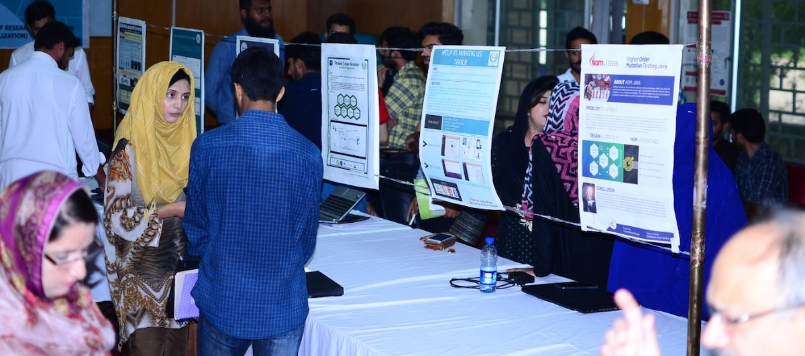
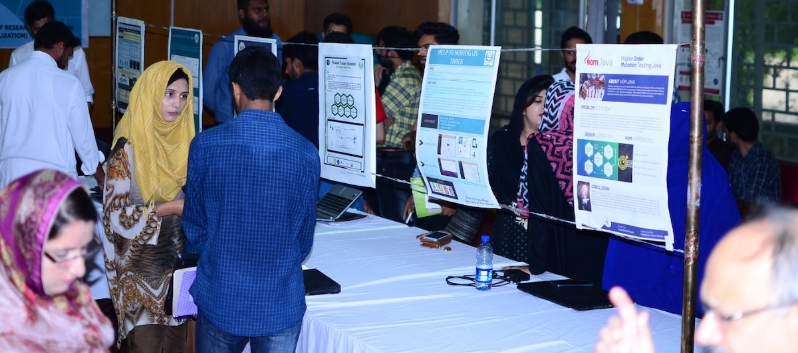

The Department of Computer Sciences at Quaid-i-Azam University, established in 1976, is recognized among the top three computer science departments in Pakistan according to QS and Times Higher Education (THE) rankings. It aims to produce highly skilled computer scientists to meet national and global demands. The department offers a range of degree programs including PhD, MPhil, MS (IST), MS (Data Science), and BS in Computer Science. Its graduates have excelled in both academia and industry worldwide. The curriculum is regularly updated to align with current technological and academic objectives.

Quaid-i-Azam University in "Computer Science and Information Systems" ranked 301-350 worldwide and third nationally by QS Rankings 2025
Learn MoreSeminar on Entrepreneurial and Growth Dynamics in the Tech Landscape by Usman Asif, CEO, DevSinc
Learn MoreStudents from CS Dept got first positions in On Spot Programming and Hackathon competitions in the 8th ExcITe Cup organized by CUST, Islamabad
Learn More


 



Investigates all aspects of information usage by humans. Research focus varies for information seeking behavior, Information Interaction Techniques, Storage and Retrieval models/frameworks for structured and unstructured information, and information services for human information needs

Focuses on analyze of data, metadata and knowledge using supervised and unsupervised mining algorithms. The target areas will be software architecture, web services and overlay networks. The main goal is to process related and uncorrelated facts and extract meaningful contextual knowledge for quality decision making.

This group investigates the applied aspects in the domains of networking, communication, security and privacy. The research group focuses on a number of areas including but not limited to computer networks, distributed systems, mobile Agent-based distributed systems, routing protocols, peer-to-peer computing, security and privacy.